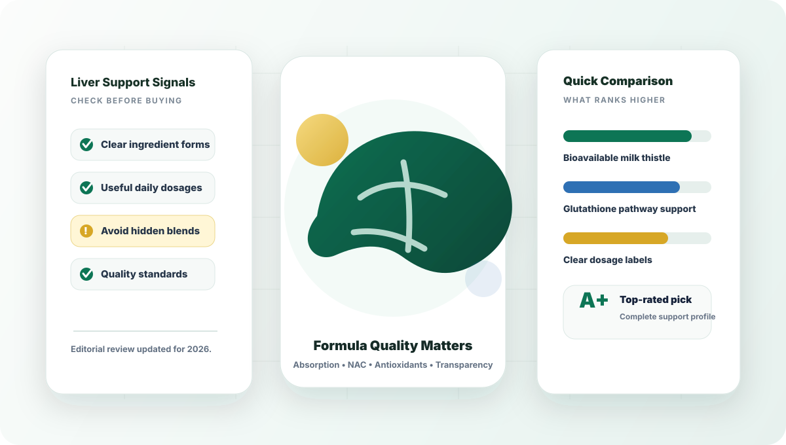
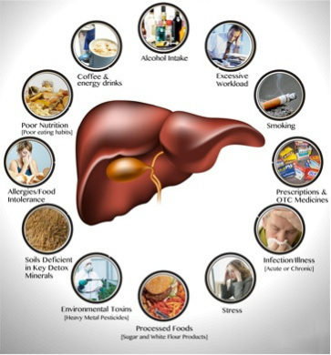
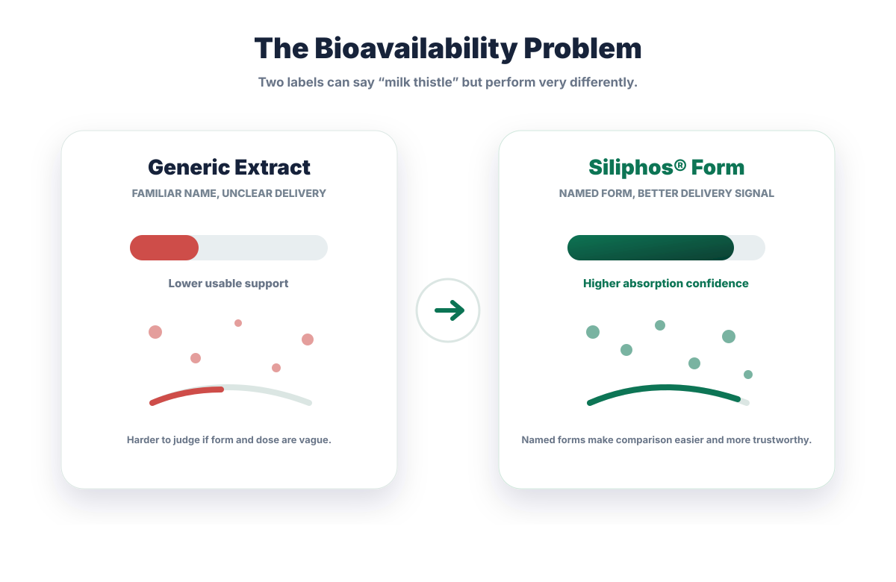
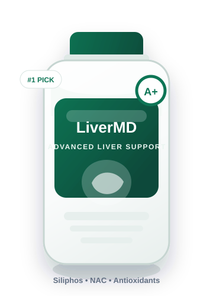
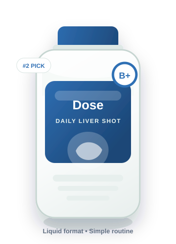
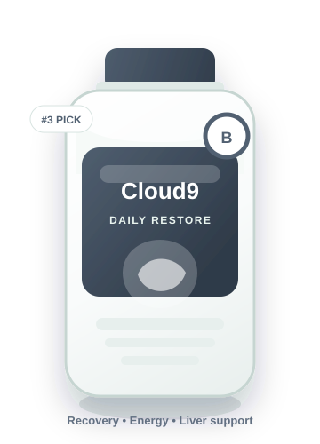
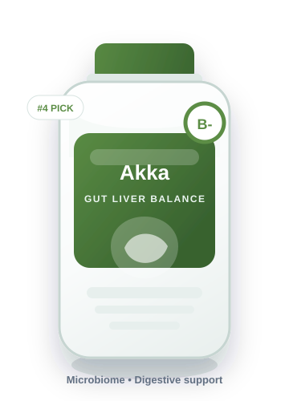

2026's Top 5 Liver Supplements To Lower ALT/AST & Support Liver Fat
GoReview analyzed leading liver health supplements to identify formulas that support healthy liver enzyme levels, liver composition, digestion, daily energy, and long-term metabolic wellness.

GoReview publishes comparison-style buying guides. This page may contain paid placements or affiliate links. Compensation may affect where products appear, but our editorial comparison is based on formula quality, label transparency, user experience, safety signals, value, and overall trust.
Our #1 pick is LiverMD® because it has the strongest overall formula profile.
It ranks highest for named ingredient forms, liver-cell support, NAC inclusion, antioxidant coverage, transparent comparison value, and a stronger satisfaction guarantee than most basic cleanse products.
Why This Matters
That tired morning feeling, afternoon brain fog, and stubborn bloating can be signs your liver needs better daily support.
Many people blame low energy on age, stress, poor sleep, or a heavy meal. Those things matter, but the liver is often part of the picture because it helps process nutrients, metabolize alcohol byproducts, handle fats, support bile flow, and filter everyday exposures.
Modern routines create a workload the body was not designed to face every day. Processed foods, high sugar intake, medications, alcohol, pollution, artificial sweeteners, and sedentary habits can all add pressure to normal liver function.
This is why a basic cleanse product is not enough. A credible liver supplement should support the liver at the cellular and metabolic level, not just rely on trendy herbs and dramatic detox language.
After reviewing the category, we found that the strongest products usually combine high-absorption milk thistle, NAC, full-spectrum antioxidant support, transparent dosing, and a meaningful guarantee.
Daily Exposure
What Your Liver Filters Every Day
Your liver works quietly all day. It helps process food additives, alcohol metabolites, prescription and over-the-counter medications, environmental pollutants, pesticide residues, artificial sweeteners, and microplastic exposure from the modern environment.
The point is not to scare shoppers. It is to compare supplements with a practical buyer’s eye. A serious formula should support normal liver pathways with clear ingredients, not promise a dramatic overnight cleanse.

Your liver helps control fat metabolism, blood sugar handling, digestion, and daily energy.
When the liver is under constant strain, the effects can show up in different ways: afternoon crashes, bloating after meals, trouble feeling light after eating, brain fog, and a slower metabolic rhythm.
Because the liver helps convert nutrients into usable energy and process dietary fats, better liver support can also matter for people who feel stuck despite eating better or exercising more.
Supports normal liver cell function and antioxidant defense.
Supports nutrient metabolism, bile-related digestion, and daily vitality.
Supports liver resilience, enzyme balance, and healthy fat processing over time.
The bioavailability problem: why generic milk thistle often disappoints.
Milk thistle is one of the best-known liver support ingredients. But the ingredient name alone does not tell you how much your body can actually use. Generic forms may have limited absorption, which means much of the active compound may pass through unused.
Premium formulas often use advanced forms such as Siliphos®, a milk thistle complex designed for improved delivery. This is why two bottles can both say “milk thistle” while offering very different levels of formula quality.

A serious liver support formula should use better forms, useful amounts, and transparent labeling.
After comparing popular formulas and liver support standards, these are the ingredient signals that helped separate stronger products from generic cleanse supplements.
Look for a bioavailable milk thistle form instead of a generic extract with unclear absorption. A stronger form is one of the clearest quality signals in this category.
The rule: if the label does not name the form, treat it as basic until proven otherwise.Full-spectrum vitamin E support is more complete than a single generic vitamin E mention. It helps support cellular antioxidant protection.
The rule: look for tocotrienols, tocopherols, or a named full-spectrum form.NAC supports the body’s natural glutathione production. Glutathione is a key antioxidant pathway connected to liver defense and detoxification support.
The rule: avoid formulas that list NAC vaguely without meaningful dose context.ALA is often called a universal antioxidant because it supports cellular energy and helps recycle antioxidant activity inside the body.
The rule: ALA is a useful supporting ingredient, especially in formulas focused on cellular health.These trace minerals support antioxidant enzyme activity and normal liver function. They are small details that can improve formula completeness.
The rule: better products usually care about supportive nutrients, not just one headline herb.Some liver supplements sound impressive, but they miss the cellular support standard.
These issues lowered product scores because they often create a strong marketing impression without giving shoppers enough formula confidence.
Often positioned as detox support, but usually more focused on water balance than deep liver cell support.
Can be connected to digestion, but it does not replace a complete liver support formula.
Curcumin can sound impressive, but absorption strategy matters. Without it, the benefit may be limited.
Better known for general wellness and circulation support than targeted liver cell regeneration.
The label may look strong, but low-dose generic milk thistle can fail the absorption test.
Hidden amounts make it impossible to verify whether key ingredients are present at useful levels.
Before buying any liver supplement, verify these non-negotiable criteria.
We compared each product using a buyer-focused scoring system.
Most liver supplements are still built around old “detox” language. The better products focus on cellular support, liver composition, antioxidant defense, label clarity, and practical customer trust.
GoReview Rankings
Top 5 Liver Health Supplements of 2026
The products below stood out after comparing ingredient quality, absorption strategy, transparency, formula completeness, customer trust, and value. Our top-rated option offered the most complete liver support profile.

LiverMD®
by 1MD Nutrition™
LiverMD® earned the #1 position because it delivers the strongest overall mix of premium ingredient forms, cellular support, label clarity, clean formulation, and customer confidence.
Where many products stop at generic “liver cleanse” wording, LiverMD® is positioned around deeper daily support: liver cells, glutathione, antioxidant defense, and healthy ALT/AST enzyme support.
Why it stood out: Siliphos® milk thistle, full-spectrum antioxidant support, NAC, quality testing signals, and a 90-day style guarantee give it the most complete profile in this comparison.
Pros
- Doctor-formulated positioning with strong liver-support focus
- Uses a patented milk thistle form instead of generic extract
- Includes NAC for glutathione pathway support
- Antioxidant and cellular support ingredients included
- No vague proprietary blend structure
- Strong customer trust and satisfaction guarantee
Cons
- Often promoted with limited stock messaging
- Only available through online purchase paths
- Premium formula may cost more than basic products
LiverMD® is the strongest choice for shoppers who want more than a surface-level cleanse. It is best for people comparing formulas for fatigue, brain fog, bloating, liver composition, and enzyme support who want the most complete well-rounded option.
- Users wanting premium cellular liver support
- People concerned about ALT/AST support
- Shoppers who want transparent formula quality
- Those who prefer capsules over liquid shots
- Users only looking for the lowest price
- Anyone wanting to buy from a physical store today

Dose for Your Liver
by Dose
Dose for Your Liver earns the #2 spot because it uses a convenient liquid delivery format, making it attractive for shoppers who dislike swallowing capsules or want a fast, simple daily routine.
Its biggest strength is usability. A liquid format can feel easier for people with pill fatigue, and the product presentation is clean and modern. However, it does not match the full patented ingredient stack of our #1 pick.
Pros
- Liquid delivery may appeal to users who dislike capsules
- Simple daily routine
- Clean ingredient positioning
- Supports liver, energy, and digestion
- Good option for shoppers wanting convenience
Cons
- Does not use Siliphos® milk thistle specifically
- Missing the same full-spectrum vitamin E positioning as #1
- No Alpha-Lipoic Acid focus
- Liquid format may be less travel-friendly
- May cost more than basic capsules
Dose is a strong alternative for shoppers who want a liquid supplement instead of capsules. It is easy to use and well positioned, but users wanting the most complete patented liver-support formula may still prefer LiverMD®.
- People who prefer liquid supplements
- Users with pill fatigue
- Shoppers who want a simple daily shot
- Users specifically seeking Siliphos® and full patented support
- Travelers who prefer shelf-stable capsules

Cloud9 Daily Restore
by Cloud9
Cloud9 Daily Restore is a broad recovery formula that may appeal to health-conscious drinkers who want support for mood, energy, cognition, nervous system balance, and liver health in one daily product.
It ranks well for its multi-system approach, but it falls behind the top two because its liver support is less targeted. Without the same patented milk thistle and full-spectrum antioxidant stack, it does not feel as focused on liver-specific cellular regeneration.
Pros
- Broad recovery support beyond the liver
- May support mood, energy, and cognitive wellness
- Includes recognizable daily support ingredients
- Good fit for health-conscious social drinkers
Cons
- Uses generic milk thistle positioning rather than Siliphos®
- Missing full-spectrum vitamin E support focus
- No Alpha-Lipoic Acid emphasis
- NAC dose clarity is not as strong as our #1 standard
- Alcohol-centric positioning may not fit every shopper
Cloud9 Daily Restore is a good middle option for whole-body recovery support. It is not the most targeted liver regeneration formula, but it may make sense for users who want broader daily support connected to alcohol recovery.
- Health-conscious social drinkers
- Users wanting mood and energy support too
- Shoppers seeking a broader daily recovery capsule
- Users needing maximum liver enzyme support
- Anyone specifically seeking Siliphos® or TocoGaia®

Akka
by Liver Cleanse Protocol
Akka takes a different route by focusing on the gut-liver connection. That makes it interesting for shoppers who connect bloating, digestion, and metabolic health with their liver support goals.
The downside is that it does not provide the same direct liver-cell support profile as the higher-ranked formulas. It lacks the same Siliphos®, NAC, vitamin E, and ALA stack that helped stronger products score higher.
Pros
- Interesting microbiome-forward approach
- May suit people with bloating and digestive concerns
- Clean label positioning
- Simple daily use
Cons
- Not doctor-formulated in the same way as top pick
- Generic silymarin approach lowers absorption confidence
- No full-spectrum vitamin E focus
- No clinical-dose NAC positioning
- Less direct cellular liver support
Akka is a decent choice for users who want a gut-first liver support angle. It is less convincing for shoppers who want targeted cellular liver support and high-absorption liver-specific ingredients.
- People interested in gut-liver support
- Users with bloating and digestive concerns
- Shoppers open to microbiome-focused formulas
- Users seeking the strongest ALT/AST support profile
- Those requiring patented liver support ingredients

Alpha Cleanse
by EdenBoost®
Alpha Cleanse is a clean-label herbal option for general liver and digestive maintenance. It may appeal to shoppers who prioritize organic-style, allergen-conscious, broad herbal support.
However, broad formulas can be diluted. With many herbs competing for space in a small serving, key active ingredients may not reach the levels shoppers expect from a more clinical liver support product.
Pros
- Includes familiar herbal liver-support ingredients
- Clean label positioning
- Vegan, non-GMO style appeal
- May suit general wellness maintenance
Cons
- No doctor-formulated positioning
- Generic milk thistle cannot solve the absorption gap
- No NAC support
- No full-spectrum vitamin E support
- Broad blend may dilute potency
- Lower overall score for targeted liver support
Alpha Cleanse is acceptable for basic herbal support, but shoppers looking for targeted liver composition, ALT/AST support, and cellular-level ingredients should compare it carefully against the higher-ranked options.
- General wellness maintenance
- Budget-conscious buyers
- People who prefer broad herbal blends
- Users seeking measurable liver marker support
- Anyone wanting patented ingredient forms
- Shoppers who want clinically dosed NAC and Siliphos®
Helpful Answers
Frequently Asked Questions
A better formula usually uses a more bioavailable milk thistle form, clear dosages, NAC, antioxidant support, quality standards, and a transparent label instead of relying on one familiar ingredient name.
Siliphos® is a useful quality signal because it is designed for better absorption than standard milk thistle. It is not the only factor, but it helped higher-ranked products stand out.
Proprietary blends hide individual ingredient amounts. That makes it harder to know whether the product includes meaningful doses or only tiny amounts of popular ingredients.
For most serious shoppers, a cellular-support formula is easier to trust because it focuses on liver function, antioxidants, glutathione support, and ingredient quality rather than dramatic cleanse promises.
Yes. Anyone with a medical condition, abnormal liver enzymes, pregnancy, or prescription medication use should speak with a qualified healthcare professional before using supplements.